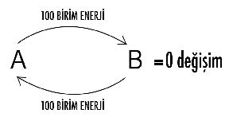
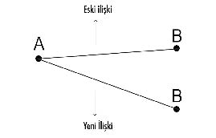
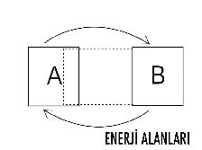
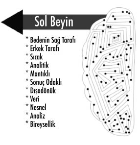
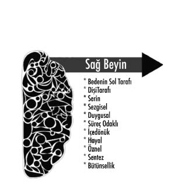

Cornell University’de çalışan psikologlar Justin Kruger ve David Dunning’in tarihe geçmelerine ve Nobel kazanmalarına vesile olan, literatüre de “Dunning-Kruger Etkisi” adıyla geçen bir teorileri vardır.
Bu teoriye göre cehalet, bireyin kendine olan güvenini daha çok artırmaktadır. Dunning Kruger sendromlu kişiler, ne ölçüde niteliksiz olduklarını fark edemeyen, konuşmalarını ve oldukları kişiyi abartma eğiliminde olan, çok az şey bildikleri halde herkesten çok konuşan âciz ve mutsuz insanlardır.
Kendin hakkında ne kadar az farkındalığın olursa,
kendini o kadar mükemmel zannedersin.

A kişi, B kişiyi değiştirebilmek ve söylediklerini ona yaptırtabilmek için 100 birim enerji harcıyor. Aynı şeyi B kişi de yapıyor ve A kişiyi değiştirmek için o da 100 birim enerji harcıyor. Bu ilişki şeklinde harcanan enerji birimi toplam 200 olduğu halde alınan sonuç yazık ki koca bir “0” (sıfır)...
Senin bedeninin ve beyninin sinyalleri sadece kendi kaslarını uyarır ve bir başkasını değiştirmek gücüne sahip değilsindir.
Yani haddin, beden sınırların kadar olmalıdır.
Yeryüzünde değiştirebileceğin tek kişi kendinsin ve şunu bil ki:
Sen değişirsen dünya değişir...
“Metin ama beni çok kızdırıyor, bana bir daha böyle davranmasını istemiyorum” mu dedin?
Tamam, o halde yapabileceğin iki şey var:
Birincisi, üzüntü ya da rahatsızlık duyduğun şeyi sana yaptığında, bu davranışından dolayı kendini kötü ya da değersiz hissettiğini ona ifade edersin.
Karşındaki kişi yüksek ihtimalle, senin bir daha kendini kötü ya da değersiz hissetmemen için bundan sonraki davranışlarına dikkat edecektir. Onun alanına müdahale etmediğin, saçma bir tikinden bahsetmediğin ya da mantıklı bir konu üzerinde durduğun müddetçe, ifadene kulak verecektir. Ancak buna rağmen seni dinlemeyip aynı davranışta bulunmaya devam ediyorsa o halde ya sesini keser, anlayışlı ve hoşgörülü davranırsın ya da çeker gidersin...
Hepsi bu...
Biliyorum bu da kolay değil... Aslına bakarsan onun seni incitmelerine karşı susup oturmak da kolay sayılmaz. Ben sana uygulayabileceğin en az dirençli yolu gösteriyorum.
İfade etmek karşındakini değiştirmek demek değildir, ortak yaşam paydanda senin üzüldüğün noktaların altını çizmektir.
Birini değiştirmek üzere ona sürekli ne yapması gerektiğini söyleyip durursan, karşındaki kişi yapmamasını istediğin şeyi özellikle yapmaya başlayacaktır.
Annemle babam beni gün içinde defalarca arayıp sürekli “Neredesin Metin? Ne zaman eve döneceksin?” deyip dururlardı. Onların beni kısıtlama çabalarına sonunda itiraz ettim ve eğer günde bir defadan fazla ararlarsa, telefonumu kapatacağımı buna rağmen beni kısıtlamaya yine devam ederlerse bu kez evden taşınacağımı söyledim. Annem ve babam, beni kısıtlamaya çalıştıkça başarılı olamayacaklarını anlayıp sonunda iletişime geçmenin daha sağlıklı olacağın karar verdiler.
Karşındaki insanı değiştirmeye çalışmak, boş ve sonuçsuz bir uğraştır. Birini değiştirmekteki ezici güç egoya aittir. “Ben doğruyum, ama benim bakış açımdan doğru olan bana göre sen tamamen yanlışsın ve değişmek zorundasın” demek büyük hadsizliktir.
Ben gelen hastalarımda çoğu zaman neyi değiştiriyorum biliyor musun?
Doğru tahmin...
Tam da sahip oldukları bu hadsiz egoyu değiştiriyorum... Hastalarımın pek çoğu, hayatlarının, ilişkilerinin, kilolarının, kazandıkları paranın, etraflarındaki insanların kendilerine karşı olan davranışlarının nasıl bu kadar değişebildiğine hâlâ inanmakta zorlanıyorlar.
Problemin hep dışarıyla alakalı olduğu inadından vazgeçip, içeride var olan problemleri çözmeye başladıkça yaşadıkları ve yaşattıkları her deneyim değişti.
İşte bu yüzden artık sen de:
“Yol almaya değil, yol olmaya çalış.”
İfade etmek yerine kendi kendine söylenmeyi tercih eden insanların, Spiritüellik hakkında hiçbir şey bilmediklerini de rahatlıkla söyleyebilirim.

A noktasındaki adam, anlayışsız, B noktasındaki kadınsa takıntılı diyelim. Bu ikisi arasındaki düz çizgi onların yaşadığı ilişkidir. A’daki kişiyi değiştiremezsin, ancak B kişi olan seni tabii ki değiştirebilirsin. Şekilde de görüldüğü gibi aradaki ilişki yani A ile B arasındaki doğru da böylece bambaşka bir yöne doğru gidecektir.
Aslında A kişi de senin için değişmiş sayılacaktır çünkü sen onu sadece seninle olan ilişkin içinde tanıdığından başkalarıyla olan ilişkisinde kim olduğunu bilmezsin. Sana karşı yaptığı saygısızlığı patronuna karşı yapmadığından habersizsindir.
Sen değiştikçe, A kişi her ne kadar aynı kalmayı tercih etse de yaşanan ilişki tamamen değişecektir. Bu bir fizik kanunu ya da matematik denklemi kadar nettir. Tartışılamaz bir hakikattir.
Vejetaryen ve barışçıl bir insan olarak, insanoğlunda şiddete dair hiçbir şeyi desteklemediğimi, bunu hiçbir koşul ya da bahaneyle onaylamamın mümkün olmadığını artık sen de anlamışsındır. Ancak şimdi sana anlatacağım örneğin içinde anne ve çocuğu arasında yaşanan şiddetten faydalanarak onların ilişkilerini nasıl yeniden yapılandırdığımı göreceksin.
Doktorluk yapan ve oğlunu tek başına büyütebilmek için büyük emek sarf eden bekâr anne, çocuğunun kendisine şiddet göstermesinden yana çok sıkıntı yaşıyordu. Annesine oyuncaklarıyla vuran, saçlarını çeken, tekme atan, yüzüne eşyaları fırlatan çocuk, genç kadını canından bezdirmişti. Ofise bir defasında topallayarak gelen bu anne, bacağına sert bir oyuncak darbesi alarak yaralanmıştı.
Çocuk benim yanımda da annesinin dizine arabasıyla vurmaya devam etti. Anne, “Yapmasana evladım, bak canımı yakıyorsun” dedikten sonra bana dönüp çaresizlikle yüzme baktı. Kadın çocuğuna karşı gayet sabırlı davranıyordu ancak biriktirdiği bu öfkeler olmadık zamanlarda infilak ediyordu ve çocuk küçük bir şey yaptığında bile ona el kaldırmaktan kendini alamıyordu. Yersiz zamanlarda çocuğuna vurduğu için bu kez kendisini suçlamaya başlayıp ağlayan anneye “Çocuğunu bir daha dövmek istiyor musun?” diye sordum. Kadın tabii ki bunu asla arzu etmediğini anlattı. “O halde onu bir daha dövmemek için şimdi döveceksin” dedim...
Aynen dediğim gibi yaptı.
Çocuk, içindeki öfkeyi tıpkı annesinin yaptığı gibi anlık patlamalarla ifade ediyordu ve şimdi uygulayacağımız yöntemle aralarındaki ilişkiyi yeniden şekillendirecektik.
Çocuk hangi hızda ve hangi oyuncakla annesine vurursa annesi de o oyuncakla çocuğuna hafifçe, aynı bölgesine bir tane vuracak ve suç aleti oyuncağı da ortadan kaldıracaktı. Çocuk ağlamaktan katıldığı halde bile ortadan kaldırılan oyuncak, ona hiçbir şekilde geri verilmeyecekti.
Bunun üzerine çocuk annesinin bacağına arabasıyla vurduğunda anne de aynı arabayla çocuğunun bacağına hafifçe bir darbe indirdi ve arabayı dolaba kaldırdı. Çocuk, bütün ısrarlarına rağmen annesinin sakladığı arabaya bir türlü ulaşamadı.
Sanırım altı ya da yedinci denemede çocuk artık mesajı almıştı ve bir daha annesine karşı hiç şiddet göstermedi.
Çocuk artık durup dururken annesi tarafından dayak yemediğini sadece ona zarar verdiği anlarda bunu yaşadığını, annesinin kendisiyle kişisel bir sorunu olmadığını anladı.
Yani aralarındaki neden-sonuç ilişkini kavradı. Çoğu birliktelik bu neden-sonuç ilişkisi kurulamadığı için kişiselleşir ve yıkım getirir. Hepimiz hayatımızda birçok kez evladımıza, annemize, babamıza ya da sevdiğimize kızıp “Keşke benim hayatımda olmasaydın” demişizdir. İçeride kalan, ifade bulmamış kızgınlık canından çok sevdiğin bir insanı bile “düşman” olarak görmeni sağlar. Aradan bir müddet geçip kızgınlık eridiğinde o insan hayatındaki en değerli varlık haline gelir. Peki bu durumda ne değişti? Karşındaki insan hep aynı insandı. Senin algın değiştiğinde, dünyan da değişmiş oldu.
İşte bu yüzden karşındaki insanın değişmesi gerektiğini söylemeyi bırak. Kendini değiştir, yaşamın değişsin.
Bu ilişkilendirmeyi yapmamış olsaydık, çocuk annesinden olur olmaz zamanlarda tokat yediğinde annesinin onu sevmediğini düşünecekti. Oysa aralarındaki çatışmanın birbirlerini sevmeleriyle ilgisi yoktu sadece kendilerini doğru ifade edemiyorlardı. Dolayısıyla anında ifade çok önemlidir ve bazen konuşarak olması da gerekmez.
– Çocukları severim ve iyi anlarım.
– İyi de Metin, senin çocuğun var mı ki?
– Hayır! Ama ben de bir zamanlar çocuktum...
Yaratım-ifade dengesinde, sadece üzüldüğün ya da sıkıntısını çektiğin noktaları söylemek değil, sevdiğini söylemek de ifadedir. Zaten bana göre sevdiğini söylemeyeceksen ifade edecek başka bir şeyin de olmamalı. Sevdiğini söylemeyeceksen belki de ağzını hiç açmaman daha iyidir.
Sadece tepkilerini değil, sevgini de anında ifade etmelisin.
Suskunluğunu bozmaya değecek sözler sarf etmelisin...
Kendi suskunluğunu bile anlayamazken,
sözcüklerinin anlaşılmasını nasıl beklersin?
Geçtiğimiz akşam babamla tartışmıştık ve sabah uyandığımda yüzünün hâlâ asık olduğunu gördüm. Hemen yanına gidip önce omzunu ısırıp ona şaka yaptım ve ardından da “Dünyaya bir milyon kez gelsem, bir milyon kez yine seni babam olarak seçerdim. İyi ki benim babamsın” dedim, sarıldım...
Sevdiğini ifade etmeyi bilmiyorsan, ilişki kurmayı bilmiyorsun demektir ve hayatın boyunca kurduğun bütün ilişkiler sorunlu olacaktır.
Bebeklik zamanlarında konuşmayı öğrendiği için kendilerini ayrıcalıklı hisseden insanlara söylediğim tek şey şudur:
“Arkadaşım altı aylıkken konuşmayı öğrendin
ama bugün kırk yaşına geldin de susmayı öğrenebildin mi?”
Bu arada, çocuklarının yanında kavga etmediklerini söyleyen anne babalara da kötü bir haberim var. Her ne kadar yaşadığınız çatışmalara çocuğunuz tanık olmuyorsa da, onlar olan biten her şeyin son derece farkındadır. Çocukların ebeveynleriyle ve diğer herkesle kurdukları iletişimin yüzde seksenden fazlası enerjiseldir ve duymasalar bile yaşanan her şeyin farkındadırlar.
MİDE ÇAKRASI + KALP ÇAKRASI
(ALMA-VERME DENGESİ):
Sosyal ilişkilerin dengelendiği enerji merkezi olan mide çakrası “SİZ”, sevgiyi deneyimlediğimiz kalp çakrası da “BEN”dir... Bu iki enerji merkezi arasında bir dengesizlik söz konusu olduğunda, sarkaç iki ayrı uca gidebilir. Alma-Verme Dengesi yitik olan kişi ya bencildir ya da fedakâr.
Belki çok üzüleceksin ama “fedakârlık” sözünü duyar duymaz bunu bir erdem olarak alıp kabullenmemen gerektiğini hatırlatırım.
Bencilik de fedakârlık da eş derecede hastalıklı zihin yapılarıdır ve her ikisinde de büyük egolar vardır.
Hayatımda sürekli acı çektiğim ve Alma-Verme dengemin yitik olduğu zamanlarda, genelde hep isyan ve şikâyet halindeydim. Ben gayet fedakâr olduğum, insanlara iyi davrandığım ve yardımcı olduğum halde neden haksızlığa uğradığımı ve düzgün insan ilişkileri kuramadığımı sorgulardım. O dönemlerde evrensel adalete olan inancımı kaybetmiştim. Oysa bir insanın farkındalığının, evrensel adalete olan inancı olduğunu daha sonra öğrendim. Şimdi görüyorum ki aslında evrende her şey son derece adil...
Evrensel adalete güvenmeyen ve hayatlarını sürekli şikâyet halinde yaşayan insanlar, farkındalık körlüklerinden dolayı bu haldedirler.
Bencillik, yoksunluk bilincinden gelir ve bencil insan aç kalmak korkusundan dolayı elindeki hiçbir şeyi kimseyle paylaşamaz. Bu zihin yapısındakiler yaşadıkları fakirlik korkularından dolayı, zenginliklerini yaşayıp bölüşemezler.
Bana göre, asıl korkulacak kişiler fedakâr olanlardır çünkü iyilikleriyle sinsice işleyen duygusal bir ticaret yaratırlar.
Fedakârlık, “feda” edip “kâr” etmektir!
Fedakâr insanın amacı, önce karşısındakine iyilik yapıp, üstelik bunun da karşılıksız olduğunu söyleyip daha sonra yaptığı bütün bu iyiliklerin bedelini karşı tarafa ödetme yoluna giderek onu kendisine tutsak etmektir.
Çocuklarından dert yanıp yakınan bir hastam “Metin Bey, ben onlara bütün hayatımı adadım. Yemedim, içmedim, gezmedim. Sadece onlara bakmak için çalıştım. Kendimi hırpaladım. Hayatımı yaşamadım” diyerek ağlıyordu. Her şey yaşanıp bittiğine göre bugün hissettiği problemin ne olduğunu sorduğumdaysa “Çocuklarım bana bakmıyor. Kendi hayatlarını yaşıyorlar” dedi. Ben bunun üzerine “İyi de hanımefendi. Siz çocuklarınız için yaptığınız şeyleri karşılık bekleyerek mi yapmıştınız?” diye sordum ve kadın bana ne cevap verdi biliyor musun?
“O zaman karşılıksızdı...”
Peki bir zamanlar karşılıksız olan şeyler için bugün bir karşılık beklemek ticaret yapmak sayılmaz mı? Evet... Ortada para olmadığı halde vadeli çeklerle de ticaret yapılıyor. Kadının çocuklarına yaptığı fedakârlıklarla, içsel olarak tek bir hedefi vardır, o da çocuklarını kendisine tutsak etmekti.
Bu tür insanlar, hedeflerindeki kişilere öylesine kendilerini adamışlardır ki onların hangi renk çorap giyip evden çıktıklarını bile takip ederlerken, kendi çorabının delik olduğunun farkında değillerdir.
Şimdi duyacağın şeyden dolayı hayal kırıklığı hissedeceğini biliyorum ama ben seni yaşam boyunca gözünü açmadığın sahte rüyalarından kaldırıp hakikate uyandırmak için buradayım. Tatlı uykulardan kalkmak rahatsızlık verici olsa da, sana vaat ettiğim hayat bütün bunlara değecektir...
Şunu bilmelisin ki:
Fedakâr insanlar,
er ya da geç terk edilecektir ve haksızlığa uğrayacaklardır.
Şimdi egon bana karşı ayaklanarak, “Fedakârlığın bu kadar da acıklı sonuçları olamaz” diyerek itiraz etse de, bu hakikati bir an evvel kabul etmen, sahip olman gereken dengeye daha çabuk ulaşmanı sağlayacaktır.
İlişkilerde “iyi”leşerek, bu iyiliğinle karşı tarafı kendine tutsak etmeyi öğrenirsin ve karşındakini fedakârlığınla kendine bağlamaya çalışırsın...
Bencillik de fedakârlık da; kendini sevmeyen ve muhtaç olduğu sevgiyi dışarıdan bekleyen hastalıklı egoların yarattığı bir sonuçtur.
“Fedakârlık” sevgi dilenciliğidir.
Bir defasında hastalarımdan birine fedakârlığın iyi bir şey olmadığını yine bu şekilde anlatmaya çalışırken hastam düşünüp tarttıktan sonra bana dönüp “Çok haklısın Metin Bey! Fedakârlık aptallık. Bu dünyada bencil olacaksın. İşte o zaman daha kıymetli olursun” dedi.
Ben hastama arabasının hızını yavaşlatması gerektiğini anlatırken, o kalkıp arabayı patlatmaktan bahsediyordu. Kendisini iki ayrı uçtan birine ait hissetme ihtiyacı, onu sağlıklı çözüme karşı körleştiriyordu.
İnsan, kendini iki uzak uçtan birine ait hissetmek arzusu duysa da, evrende her şey ancak sağlıklı bir denge üzerinde var olabilir...
Siyahı ya da beyazı seçmek zorunda değilsin! Aradaki griyi de görmeli, siyahla beyaz arasında kilitlenen algılarının körlüğünden kurtulmalısın.
Olması gereken “Sadece ben!” bencilliği de değildir, “Sadece sen!” fedakârlığı da...
Alma-Verme Dengesi “Önce ben!” diyebilmektir...
Biliyorum, bu cümle de her ne kadar kulağına “bencillik”ten bahsediyormuşum gibi gelse de, aslında hassas bir noktaya işaret ediyorum!
Aşağıda yazdığım cümleleri, lütfen sen de bir kenara yaz ve kitabı kapattıktan sonra bu anlattıklarım üzerinde düşünebilmek için kendine zaman ayır.
ÖNCE BEN = Önce ben
BENCİLLİK = Sadece ben
“Önce ben!” demekle “Sadece ben!” demek arasındaki uçurumu gördüğünde; hayatının, tecrübelerinin, ilişkilerinin bütün niteliği ve hazzı da değişmeye başlayacaktır.
Hayatlarındaki adama köle olan kadınlar görmüşsündür. Bu tür ilişkilerde kadın kendisini tamamen sevdiği adama adar, onun için her şeyi yapar, mutlu olacağı şeyleri bilir ve takip eder, hizmette sınırsız ve kusursuz davranır. Sonra bir gün bir de bakarsın ki, bu adam eşini başka bir kadınla aldatıyordur. Hayatını sevdiği adama adayan bu fedakâr kadının, böylesi bir ihaneti hiç hak etmediğini düşünürsün.
Oysa bu son ne bir sürprizdir, ne de haksızlıktır... Aslında o fedakâr kadın, adamı içsel olarak hadım etmiş, kendisini değersiz hissetmesine neden olmuştur.
Fedakâr insanlar er ya da geç terk edilir ve hayatları boyunca haksızlığa uğrarlar!
Bu kişiler, evrensel bir kuralı ihlal ettiklerinden dolayı, karşılaşacakları bütün sonlar; terk edilmek ve haksızlığa uğramaktır...
Hangi evrensel kaideden mi bahsediyorum?
Enerji alanlarının dokunulmazlığı kaidesinden...

A kişi, B kişinin enerji alanına müdahale ettiğinde, B kişi ona “DUR BURASI BENİM ALANIM” demez. Üstelik bu alan ihlaline de her zaman izin verir çünkü o fedakâr taraftır. B kişi, kendi alan kaygısı ve kavgası tanımıyordur. Kendi alanına saygı duymadığı gibi karşısındakinin de enerji alanına saygı duymayan fedakâr B kişi, A’nın enerji alanına sürekli müdahale eder ve kendi adına onun bütün işlerini kolaylaştırmaya çalışır.
“Sen yorulma ben hallederim.”
“Sen üzülme ben konuşurum.”
“Sen düşünme ben işi bitiririm.”
“Sen zahmet etme yemeği ben pişiririm.”
“Sen kaygılanma faturaları ben yatırırım.”
“Sen ağlama ödevlerini ben yaparım.”
Bu saydığım yaklaşımların hepsi B kişinin fedakâr yaklaşımıdır ve A kişinin enerji alanını sürekli taciz etmesidir.
Evet... Belki başlarda bu durum A kişinin çok hoşuna gidecektir ama bir müddet sonra ne olacaktır biliyor musun? A kişi kendisini çok kötü hissetmeye başlayacaktır. Çünkü karşısındaki fedakâr B, onu ilişkide yok edip tüketmektedir. A kişi beceriksiz, silik, aptal ve âciz olduğu hissine varacaktır ve bu durumdan rahatsızlık duymaya başlayacağından ilişkide sorun çıkaracaktır. Kendini yükseltme yoluna gitmek isteyecek olan A kişi, B’yi aşağılayarak onu kendi enerji alanından uzaklaştırmaya çalışacaktır. B’yi hassas noktalarından yaralamaya çalışarak kendini iyi hissetme çabasına girecektir. Mesela bu kişi sevgilisiyse eğer ona karşı “Senin de selülitlerin çıktı. Yakında 25’lik bir kız alırım kendime” gibi incitici cümleler kurabilecektir.
Buradaki saldırı güçlü, kötü ve yetişkin bir erkek tarafından yapılmamaktadır. Bu saldırıyı âcizlik içinde, güvensiz bir çocuk yapmaktadır. Bu kırıcı cümlelerin asıl anlamı şudur:
“Sen her şeyi benim adıma da yapmaya devam edersen, ben gelişemem. Lütfen artık benim enerji alanımdan çekil...”
Erkeklerin evlerindeki daha fazla erdemleri olan eşlerini çok daha vasıfsız kadınlarla aldatma nedeni budur. Vasıfsız da olsa o kadın erkeğe annelik taslamaz ve onu erkek hissetirir. Hiçbir erkek ilişkisinde çocuk olmak ve annesi gibi davranan bir kadınla yatağa girmek istemez.
Genellikle anneler çocuklarına, kadınlar da eşlerine ya da sevgililerine karşı enerji alanı ihlalinde sıkça bulunurlar, üstelik de bunun iyilikten ve fedakârlıktan kaynaklandığını düşünüp yazık ki doğru bir şey yaptıklarına inanırlar...
Bundan sekiz yıl kadar önce eğitimlerime bursla katılan kadın bir öğrencim vardı. Tekstil firmasında sekreter olarak çalışıyordu ve asgari ücretle geçiniyordu. Annesi vefat edince köyde yalnız kalan babasının, İstanbul’a gelip yanına taşınacağını anlatmıştı. Babasının neden köyde kalmak istemediğini sorduğumdaysa, adamın İstanbul’a gelip iş bulmak istediğini söyledi.
Kızının yanına yerleşen yaşlı adam, aradan aylar geçmesine rağmen bir türlü iş bulmadı. Babasının bunca zaman neden çalışmaya başlamadığını sorduğum öğrencim “Babam artık iş aramıyor” dedi. Asgari ücretle geçinmeye çalışan kadın; evin bütün masraflarını karşılıyor, adamın her ihtiyacını gideriyor, temizliğini, ütüsünü, alışverişini yapıyordu. Yaşadığı hayattan memnun olan baba, iş arama gayesinden çoktan vazgeçmişti.
Gel zaman git zaman kadının çantasından paralar eksilmeye başladı. Babasının hırsızlık yaptığının farkında olan öğrencime bu olayla ilgili ne gibi önlemler aldığını sorduğumda babasını utandırmamak için konuyu hiç açmadığını söyledi.
Öğrencim, bir müddet sonra babasının kumara başladığını, para çalmaya devam ettiğini ve artık küfrederek üzerine yürümek cüretinde bulunduğunu anlattı. “Bu konuyu babanla konuşup, onu uyardın mı?” dedim ama kadın yine babasına karşı saygısızlık yapmamak için susmayı tercih etmişti.
Aradan bir ay kadar geçmemişti ki, öğrencim, maaşından artırarak biriktirdiği parasını iş kurması için babasına verdi. Daha sonra bütün birikiminin kumarda harcandığını duydu ve buna rağmen babasına karşı herhangi bir tepki göstermedi.
Bir gün ofise ağlayarak geldi ve öz babasının tecavüzüne uğradığını anlattı. “Babanı evden gönderdin mi peki?” diye sordum ama öğrencim bunu da yapmamıştı. “Babana neden tepki göstermiyorsun ve daha ne olmasını bekliyorsun?” diye sordum. Kadın babasına çok kızıp bağırmıştı ama yine de onu evden kovamamıştı. Her şeye rağmen babasını kabul etmesi gerektiğini düşünüyordu.
Aradan çok kısa bir süre geçmişti ki, öz babasının tecavüzüne uğradığı halde onu evden atmayan bu kadın, babasının kumar borçlarına karşılık başka adamların tecavüzüne maruz bırakıldı. Eve gelen kumar alacaklılarının tacizine uğradı. Yaşadığı bu son felaketten sonra babasıyla yollarını ayırmaya nihayet karar verdi.
Şimdi bu kadıncağızın hayırlı evlat olarak heykelini mi dikmek lazım dersin?
Bu hikâyede şaşkınlık yaratacak bir şey yok aslında. Kadın, yaptığı fedakârlıkların karşılığını net olarak alıyordu. Bunları yaşaması sürpriz değildi! Fedakâr evlat olmak yerine, “ÖNCE BEN” dengesini kavrasaydı ve babasına “Bana dokunmana izin vermiyorum. Sana sürekli yardım edemem. Kendi kendine yardımcı olmak zorundasın! İş aramaya ve kendine kalacak bir yer bakmaya başla!” deseydi, bütün bunlar başına gelmeyecekti.
Anlattığım hikâyenin suçlusu tabii ki kadındı! Yeryüzünde kendi öz kızına tecavüz etmekten cinsel haz duyacak bir baba modeli yoktur. Babanın farkındalığı o kadar düşmüştü ki, belki çalışıp para kazanmak zorunda kalsa körlüğünden ayılacaktı. Yazık ki kızı oyunbozanlık yaptığı ve onun enerji alanına müdahale ederek, babası adına onun bütün yüklerini hafiflettiği için, adam giderek âcizleşmekteydi. Babasının hiçbir yanlışına tepki göstermeyen, kendi alanını gaddarca ihlal eden bu adamın hadsizliğini engellemeyen mağdur kadın, ancak uğradığı toplu tecavüzün ardından kendi sınırlarının farkına vardı.
Araçların park sensörleri duvara yaklaştıkça daha yüksek ve sık aralıklı sinyaller verirler. Bu sinyallerin şiddetine ve sıklığına kulak vermezsen, duvara çarpman an meselesidir. Öğrencim, başına gelen onca olumsuzluğun ona yaptığı uyarıları duymazlıktan geldiğinden ancak duvara çarpıp sarsıldıktan sonra hayatındaki dengesizliğin farkına varabildi.
Mevlana’nın “Bu yollar yalnız yürünmez” sözünde de işaret ettiği gibi, yaşam sahnesi tek kişilik değildir. Herkes hem kendi alanını korumak hem de başkalarınınkini ihlal etmemeye özen göstermek zorundadır. Mutlu, barışçıl, kaliteli ve sağlıklı ilişkiler ancak enerji alanlarına duyulan saygıyla yaratılır ve yürütülür...
Birçok sözde kişisel gelişimciler ya da gurular, tepkisizliğin esas olduğuna dikkat çekerler. Her şeyi ve herkesi olduğu haliyle kabul etmenin bir özellik ve erdem olduğunu iddia ederler.
Bu tamamen yanlış anlaşılmış bir felsefedir. “Kendi problemlerinden dolayı sürekli etrafta gerginlik yaratma” demek istenmiştir. Beta beyin dalgasından çıktığında “kişi” değil “olay” senin içinde herhangi bir his oluşturuyorsa, bunu tepki olarak göstermelisin. Peygambermiş gibi davranıp karşılığında kurban gibi hissederek asla etrafındakilere yardım edemezsin. Sen bunun farkına varmazsan evrensel kanunlar bunun er ya da geç farkına varmanı sağlayacaktır.
Evrensel kaidelerin ihlal edildiği hiçbir alandan, iyilik, güzellik, uyum ve denge çıkmaz...
Özel alanın ihlal edildiği an “DUR... BURASI BENİM ALANIM” demeli ve başkalarının enerji alanlarına da aynı duyarlılıkla saygı göstermelisin...
Senin en değerli ve en iyi tekâmül hocaların, özellikle iyi tanıdıkların ve sana en yakın duran kişilerdir...
Hayatının en büyük derslerini ailenden ya da sevdiklerinden alırsın... Pahalı bulduğun bakkalı terk edip bundan sonraki alışverişlerini daha ucuz bir bakkaldan yapmayı seçebilirsin. Her ikisinden de alman gereken dersleri alır ve yoluna devam edersin. Bunlar seçmeli derslerin olarak karnene işlerken, zorunlu ve ana dersler içinde seçim yapma şansın yoktur. Ailen ve sevdiklerin zorunlu sınavlarındır ve o dersin içinden geçip kendini geliştirmek durumundasındır...
Unutma:
“Deneyim kazandığın sürece, zaman kaybetmiş sayılmazsın.”
Etrafında çok büyük başarılara sahip olmuş insanlara baktığında, pek çoğunun bir noktada yalnız kalmış olduklarını görürsün. Hayatın sert rüzgârları her birinin üzerine esmiştir. Ancak bu şekilde köklerini toprağın derinliklerine saplarsın.
Ben 18 yaşındayken, babam trafik kazası geçirip yatalak olunca sahip olduğumuz bütün maddi varlıkları kaybettik. Kendi ayaklarımın üzerinde durabilmek ve okuluma devam edebilmek için çalışmak zorunda kaldım. Ben zor günler yaşarken yanımdaki çocukluk arkadaşımın hayatındaysa her şey gayet yolundaydı. Annesi oğlunun etrafında pervane oluyordu. Çocuğunun hayatını kolaylaştırmak için elinden gelen her şeyi yapıyordu. Yemeğini hazırlıyor, çamaşırlarını yıkıyor, oğlu için özel kıyafet alışverişleri yapıyor, çoraplarını elleriyle giydiriyor, borçlarını ve telefon faturalarını ödüyor, ona mutlu olup iyi paralar kazanabileceği işler dahi ayarlıyordu.
Kendi hayatıyla ilgili bile hiçbir sorumluluk üstlenmeden büyüyen bu çocuk, bugün yazık ki ona el bebek gül bebek bakan annesini fazlasıyla üzüyor. Çalıştığı hiçbir kurumda mutlu olamadığı gibi, kariyer yapmak konusunda en küçük bir hayali ve hedefi de yok. Oğlunu ihtimamla büyüttüğünü, böyle sorumsuz bir çocuk sahibi olmayı hak etmediğinden yakınan annesi, oğlu adına üstlendiği sorumluluklarla aslında yetiştirdiği adamın özgüveninden çalarak, ona büyük zarar verdiğinin farkında değil.
Anneler, çocuklarının büyümelerini ve sorumluluk sahibi başarılı insanlar olarak yetişmelerini isteseler de maalesef, onların enerji alanlarına sürekli müdahale ederek, gelişip büyümelerine izin vermezler.
Maması sürekli ağzına verilen çocukların, yemek yeme kapasiteleri bile gelişmez. Fedakâr annelerin çocukları genelde, hiçbir şeyi kendi başlarına yapamayacak kadar beceriksizlermiş gibi eksik gelişirler. Anneleri onlar için her şeyi hallettiğinden bir müddet sonra bu çocuklar ihtiyaç duydukları her şeyi hep dışarıdan almayı bekleyeceklerdir ve yaşamları boyunca birilerine bağlı kalacaklardır.
Bazen çocuklar, anneleri onlara mont giymelerini söylediğinde sert tepkiler verip “Giymiyorum işte!” diyerek direnirler. Oysa sevgili annesi biricik çocuğu üşümesin diye ona sadece mont giymesini söylemişti ve çocuğun gösterdiği bu sert tepkinin şımarıklıktan başka açıklaması olamazdı değil mi?
Aslında öyle değil...
Çocuklarına sürekli ne yapması gerektiğini söyleyen ebeveynler, bu tutumlarıyla çocuğa soğukta mont giymeyi bile akıl edemeyecek zavallı bir beyinsiz olduğunu hissettirirler. Doğal olarak da alanına müdahale edilen çocuk, bu kötü duygudan kendisini kurtarmak için, bildiği yoldan tepki vermek ihtiyacı duyar.
Bir defasında yine böyle mont yüzünden çocuğuyla çatıştığını anlatan anneye “Hayrola hanımefendi kertenkele mi doğurdunuz?” diye sordum. Çocuğun eğer bir kertenkele değilse ve insan formunda dünyaya geldiyse emin ol sıcak kanlı bir yaratıktır ve milyonlarca yılın zekâsına sahiptir. Soğuk havaya çıktığında bile vücudu onu ısıtmayı başaracaktır. Yüksek ihtimalle çocuk çok üşüdüğünde üzerine bir şey alma ihtiyacı hissedip montunu da giyecektir.
Bu kadar basit bir sistemi bozmanın ve çocuğa kendini âciz hissettirmenin sence ne kadar iyi niyetli bir amacı olabilir ki?
Genelde anneler, bu paradigmadan ve yarattıkları cazip dramın içinden çıkmak istemezler çünkü egosu yaptığı şeyin yapılabilecek tek doğru şey olmadığını öğrendiğinde, bu kez kendilerini çok aptal hissedeceklerdir.
Bazen yaratmakta kullandığın enerji bağımlılığa dönüştükçe,
yıkım getirir.
Doğuştan kalça çıkıklığı yaşayan ve yürüyemeyen 18 yaşındaki hastamın raporlarını incelediğimde, aslında yürümesi için herhangi bir engel olmadığını görmüştüm ta ki annesiyle tanışana dek.
Çocuğunun üzerine titreyen ve sevgi dengesi şaştığı için severken zarar verdiğinin farkına varamayan bu anne, yaptığım her tedavi egzersizinde sürekli “Aman, lütfen sakın bir şey olmasın!” deyip duruyordu. Bunca yıl içinde çocuğunu hiç dışarı çıkarmamış, onun yürümek için çabalamasına hiç fırsat vermemiş ve hatta bunu denemesine bile engel olmuştu.
Kıza, merdivenlerden yürüyerek inmesini söylediğimde neler oldu biliyor musun?
Hayatımda ilk defa bir hastamın yakınına sesimi yükseltmek zorunda kaldım.
Annesinin bütün itirazlarına rağmen, kızı merdivenlerin başına çıkarıp orada yalnız bıraktım. Sonunda her şey tam de beklediğim gibi oldu ve kız merdivenleri tek başına, kimseden yardım almadan inmeyi başardı. Yaptığı şeye kendisi de inanamamıştı. Annesinin evhamları yüzünden, tek başına yürüyebilecek güçte olduğunu anlayabilme fırsatını hiç yakalayamamıştı. “Meğer ben yürüyebiliyormuşum” diyerek bana sarıldığında, artık şunu çok iyi biliyordu; içindeki potansiyeli asla küçümseme.
Yine tedavi için gelen kadın hastam, bacağındaki dolaşım probleminden dolayı zorluk çekiyordu. Bana üç kızı olduğunu, bunlardan birinin kendisini saçlarından tutup sürüklediğini, diğerlerininse sakat bacağını tekmelediklerini anlattı. “Kızlarının yaptığı şeyi neden kocana söylemiyorsun?” dediğimdeyse, “Kızlarımı nasıl şikâyet edeyim. Babaları onları mahveder” cevabını verdi. Kızlarının zarar görmemesi için kendince fedakârlık yapan bu kadın bacağındaki dolaşım sorunu yüzünden neredeyse sakat kalmak üzereydi ve yazık ki susmaya devam etti.
Şunu her zaman hatırlamanı isterim ki:
Enerji alanına müdahale edilmesine izin verdiğin sürece, çok daha yüksek oktavdan bir ihlal seni bekliyor olacaktır.
İyi niyetle bile olsa yaptığın hiçbir fedakârlık, “yardımseverlik” sayılmayacaktır.
Fedakârlık ve yardımseverlik aynı şeyler değildir!
Yardımsever insanlar hem kendilerine destek verirler, hem de etraflarındaki insanlara yardımcı olurlar... Fedakâr insanlarsa kendilerini tamamen gözden çıkarıp ihmal ederler ve sadece başkaları için bir şeyler yapmaya çalışırlar.
Fedakârlar, başkalarına sürekli vererek kendilerini yüceltirken, karşılarındaki insanları aşağılarlar. Yardımsever insanlar, kimseyi vererek ezmezler ve açık gönüllülükle sadece paylaşırlar.
Kendini unutmadan başkaları için de hayal kurabilen insan
yüksek bir farkındalığa sahiptir...
Bundan yedi yıl kadar önce, yaptığım işle ilgili o kadar yoğun ilgi ve talep görüyordum ki artık ilgiden başımın dönme noktasına ulaşmıştım. Elimde sürekli bir valiz vardı ve hastaneden hastaneye, seminerden seminere koşturup duruyordum. Herkese iyilik yapmak ve alkışlanmak telaşıyla dur durak bilmeden seyahat edip hastalara ve öğrencilerime yetişiyordum. Babam her aradığındaysa meşguldüm ve ona ayıracak birkaç dakikam bile yoktu. Bir müddet sonra ağlama krizlerine girmeye başladım ve giderek omuzlarım çöküyordu. O zaman anladım ki ben ölsem bile, dünya dönmeye devam edecekti. Meğer düşündüğüm kadar da önemli bir adam değilmişim. İnsanlardan alkış duyma isteğimin, takdir ve beğeni alma arzumun, içsel sevgisizlik ve içsel değersizlik duygumun dışarıdan alınmaya çalışılan uyuşturucusu olduğunu anlamaya başladım.
Bir zamanlar vermenin yarattığı egoyu tatmış, bununla uyuşmuş ve giderek bu uyuşturucuya bağımlı da olmuş bir insan olarak, bugün paylaşmanın hazzına ulaştıktan sonra, artık bana kimse vermenin egosundan söz edemez.
Sen de dilenciye para vermekten öyle bir haz duyarsın ki, aslında o dilencinin ne zengin olmasını istersin ne de gitmesini... İyilik yaptığın, dua aldığın, değer gördüğün ve önemli olduğun duygusunu yaşayabilmek için o dilencinin varlığına ihtiyacın vardır.
Vermekten vazgeçip, paylaşmaya başladığında mutluluk yaşar ve mutluluk yaşatırsın...
Birine yardım ederken onu ezmediğinden emin olmalısın...
Annem yüksek okul mezunu zeki bir kadın olmasına rağmen babam onun elektronik cihazlarla arasının iyi olmadığına kanaat getirdiğinden annemi bu konuda hep yetersiz bulmuştur. Evde kumanda bu yüzden hep babamın elinde durur ve elektronik bir cihaz çalıştırılacaksa annem, babam tarafından devre dışı bırakılır. Geçtiğimiz ay eve yeni bir CD çalar almıştık fakat annem müzik dinlemeyi çok sevdiği halde aletin yanına pek yaklaşmıyordu. Benden de bir gün Enrico Macias CD’si çalmamı isteyince, bu fırsatı kaçırmayıp annemi CD çaların başına davet ettim ve “Anne yanıma gel ve CD’yi nasıl koyup çalıştırdığıma bak. Aleti kullanmayı öğren ki, ben olmadığım zaman da müzik dinle” dedim. Annem teklifime hiç sıcak bakmadı ve CD’yi benim çalmamı istedi. Geri adım atmamaya kararlı olduğumdan ben de bunun üzerine “Peki... O halde, şu an için CD’yi çalıyorum ve sen de gelip nasıl çalıştırıldığını öğrenmeyeceksen eğer, sana bir daha asla müzik çalmayacağım. Lütfen, seni küçümsememe izin verme ve kalkıp nasıl çalıştırdığıma bak” dedim. Neyse ki bu konuşmam annemi ikna etmişti ve itiraz etmeden yanıma gelip CD çaların nasıl çalıştığını öğrendi.
Yapamayacağını düşünerek içindeki potansiyeli aşağılama ve kendin için ne istiyorsan onu başkasına ver.
Fedakârlığın, karşındaki insanı aşağılamak olduğunu unutma.
Başkalarına yardımcı olurken onlara kendi başlarına ayakta durmayı hediye etmek yerine, koltuk değnekleri sunarak hiç kimseyi daha da bağlı hale getirmediğinden emin ol.
Çocuklarıyla arasının çok iyi olduğunu, annelerine sadık ve saygılı çocuklar yetiştirdiğini iddia eden bir hastama, bu fikre nasıl vardığını sorduğumda bana “Çocuklarım başlarına ne gelirse gelsin, bizim annemiz bunu çözer der” yanıtını verdi. Kadın saygılı ve sadık çocuklar yetiştirmek hedefiyle son derece hastalıklı ve bağlı çocuklar yetiştirmişti. “Başıma ne gelirse gelsin, ben bunun üstesinden gelirim” diyemeyen ve çareyi annelerinde ya da dışarıda arayan insanlar, hayatları boyunca bağımlı ve korku içinde yaşamaya mahkûmdurlar...
Başkasına yardım edebilmek için aynı yardımı önce kendine borçlu olduğunu unutma!
Ofisimi yeni açtığım yıllarda benimle çalışmak konusunda çok ısrar eden ve kişisel gelişimci olduğunu söyleyen bir kadın, bolluk bereket enerjisi seminerleri verdiğini, benimle de ortak işler yapmak istediğini belirtti. Prensip olarak hekim olmayan kişilerle çalışmadığımızı izah etsem de kadın beni ikna etmek için çaba harcamaya kararlıydı. “Bolluk bereket enerjisi çalıştığınıza göre gayet zengin olmalısınız...” yorumunda bulunduğum bu sözde kişisel gelişimci, arabası olmadığını buraya da otobüsle geldiğini anlattı. Yaptığı şeyle nasıl bu kadar çeliştiğini anlamak istediğimdeyse bana birlikte yapacağımız işlerden elde edeceğimiz kazancı eşit bölüşmekten bahsetti. Kendisine teşekkür edip onu bolluk bereket enerjisi çalıştığı fukara hayatına geri gönderdim.
Başkasına sunduğun şeyin önce kendinde olup olmadığına dikkat et! Kalp dağarcığının yabancısı olduğu şeyleri başkasına altın tepside sunamazsın. Önce gönül dağarcığını beslemeyi öğren ve onu daha sonra başkalarıyla da paylaşmak üzere aç... Kime ne sunduğundan önce, ona sahip olup olmadığına bak lütfen!
Bir şeyi almak için, önce vermek gerekir. Nefes alabilmek için dahi, onu önce dışarıya vermelisin...
SAĞ BEYİN + SOL BEYİN
(DİŞİ VE ERKEK ENERJİ DENGESİ):

‘‘Sol beyin seni yaşamında canlı tutmak,

sağ beyin yaşamını anlamlı kılmak için var.’’
-Metin Hara
Sinirler, bedene çaprazlama yaparak dağıldığından sol beyin lobunda
bir kanama ya da hasar oluştuğunda, bedenin sağ tarafı felç olur.
Kadın ve erkek özelliklerini sıraladığım yukarıdaki listede, aslında kadın bedeninden ve erkek bedeninden bahsetmiyorum. Burada anlatacağım şey; kadında da erkekte de aynı anda ama farklı oranlarda mevcut olan “dişi-erkek” enerjidir.
İnsanların ruhsal cinsiyetleri yoktur fakat her insanın bir sağ ve bir sol beyni olduğunda göre dişi ve erkek enerjileri vardır. Bu enerjilerin de dengeli olması hayatı ve yaratıcılığı tam deneyimlemek açısından çok önemlidir.
Kadın ve erkek enerjilerinin birbirlerinden ne kadar farklı ama birbirlerini ne kadar da tamamlayıcı olduğunu, yukarıdaki tablonun maddelerinden hareket ederek anlatacağım.
• Erkek enerji analitik-kadın enerji sezgisel: Erkek zihni mantık odaklı olduğundan kitap boyunca hep kanıt aramaya meyilli olacaktır. Kadın zihni ise daha sezgiseldir. Kanıtlanmış bir belgeselden ziyade, aşk filmi seçer. Çünkü kadın için hisler, kanıtlardan çok daha önemlidir.
• Erkek enerji sonuç odaklı-kadın enerji süreç odaklı: Erkek ve kadın arasındaki sonuç ve süreç ayrımının en güçlü deneyimlendiği yer sekstir. Erkek zihni, seksin sonucuna göre kaç kez seviştiğiyle ilgilenirken, kadın yaşadığı seks sürecinin nasıl başlayıp, ne şekilde geliştiği ve kendisine ne hissettirdiğine odaklıdır.
• Erkek enerji dışadönük-kadın enerji içedönük: Erkeklerin genel olarak yaşam boyu konuşmayı en çok tercih ettikleri konular dış dünyayla ilgili, maddesel mevzulardır. Bir erkeğe hayatını sorduğunda dahi vereceği cevaplar işiyle, kariyeriyle, yatırımlarıyla, hedefleriyle, arabasıyla, koleksiyonlarıyla, maaşıyla, sporla, ekonomiyle alakalı, dış dünya deneyimleri olacaktır. Aynı soruya bir kadının vereceği cevapsa onun yaşadığı hayatla içsel durumunu ifade edecektir. Mutlu olup olmadığını, haz alıp almadığını, eğlenip eğlenmediğini, keyifte ya da ıstırapta olduğunu anlatmayı tercih edecektir.
Bir süre önce intihar girişiminde bulunan bir arkadaşımızın derdini dinlemek üzere buluşup toplandığımızda, bu duygu yoğunluğu yüksek sohbetten bunalan biri sıkıntıyla ayağa kalkıp intihar teşebbüsünde bulunan kişiye dönerek “Kitap yaz kitap... İçimi baydın yeter... Kitap yaz” diyerek ortamı terk etti. Duygusallığın yoğunluğu ona kendisini güçsüz ve güvensiz hissettirdiğinden tipik bir erkek olarak, konudan uzaklaşmayı tercih etmişti. Aynı arkadaşıma, intihar teşebbüsünde bulunan dostumuza anlayışlı davranmamız gerektiğini söylediğimdeyse “Ne yani ne yapacağız adamı her gün gidip öpecek miyiz?” diyerek tepki verdi. İçdünyasına o kadar yabancıydı ki, hiçbir duygu hali ona tanıdık gelmiyordu ve aslında içeride olan bitenden bihaberdi. Bu örneklerden de anlaşılacağı üzere, erkek zihni, içeriye değil dışarıya konsantre olur.
Bir defasında da mutsuz evliliğinden yakınan kadın bir hastam, eşini şikâyet edip duruyordu ve “Kocam bana dokunmuyor, sevdiğini söylemiyor, ağzından tatlı bir söz çıkmıyor, seks hayatımız bitti, bana evdeki süs bitkisi gibi davranıyor” diyerek evde yaşadığı durumu anlatıyordu. Kendisiyle seansımız bitip kadın dışarıya çıktıktan birkaç dakika sonra, biraz önceki hanımın eşi olduğunu söyleyen bir adam içeri girip izin isteyerek oturdu. “Metin Bey, ben bu kadına daha geçen hafta tonla para harcayıp cip aldım. Bu kadın daha ne diye ağlayıp duruyor buralarda” dedi... Adam bu kadar para harcamak yerine bir tane kalpli kartpostal alıp arkasında da “Seni seviyorum” yazsa aslında hem evliliğini kurtaracaktı hem de kendisini daha huzurlu hissedecekti. Erkek zihni, bildiği denklem üzerinde bodoslama yürürken kadın zihni daha komplike işler. Bu çiftin kendi içlerindeki dişi-erkek dengeleri yitik olduğundan bir liralık bir kartpostalla bile halledilebilecek sorunun üstesinden gelemiyorlardı.
Erkeklerin tek eşli yaşamakta zorlandıkları ve genel olarak hepsinin ihanet ettiği söylentisi bir şehir efsanesi gibi dolanıp durmaya devam etse de, ben aslında durumun hiç de öyle olmadığını açıklamak istiyorum. Kadınların erkeklerden daha çok aldattığını ancak yakalanmadıkları için durumun “erkekler daha çok aldatır” gibi gözüktüğünü bunca yıllık mesleki tecrübelerime de dayanarak rahatlıkla söyleyebilirim.
Kadın, erkeğin kokusundan, ifadesinden, sesinden, tavrından dahi aldattığını teşhis edebilirken, erkek ihaneti gözleriyle görünceye dek hiçbir şeyin farkında bile olmaz. Kadın bu yüzden eşi dışında başka biriyle uzun yıllar süren ilişkilerini rahatlıkla yaşayabilirken, erkek hemen her ilişkisinde kendini ele verir.
16 yaşındayken İtalyan Lisesi’nde okuyan bir kız arkadaşım vardı ve onun sayesinde kadınların çok seçenekli yaşamak konusunda da ne kadar marifetli olduklarını öğrenmiş oldum. Her hafta Taksim’deki Terkos Pasajı’na giderdik ve dağ gibi duran kıyafet yığınları içinden aradığı beden ve modeldeki kıyafetleri tek hamlede nasıl seçebildiğine hayret ederdim. Bir hafta kendisine siyah bir ceket seçip almıştı ve ertesi hafta yine aynı yerden ikinci siyah ceketini alığını görünce dayanamayıp sordum: “Sana daha geçen hafta siyah bir ceket almamış mıydık aşkım?”
“Evet ama o iki düğmeliydi. Bunda üç tane var...”
Üçüncü haftayı baş başa yemek yiyerek geçirmiştik ancak dördüncü haftamız yine Terkos Pasajı günümüze denk geldi. Bu kez yine elini siyah ceketlere attığını görünce endişelenmeye başlamıştım ama onun açıklaması hazırdı: “Bu ceketin apoletleri var...”
Benim kıyafet durumum bu kadar renkli ve bol seçenekli değildi. O sıralar spor ayakkabım yırtıldığı için su almaya başlamıştı. Ben de bunun üzerine bir spor mağazasına gidip 42 numara bir çift spor ayakkabı seçtim. Ayağımdaki yırtık ayakkabıları çıkarıp mağazadaki çöpe attım ve yenilerini giyip ayakkabı konusunu uzunca bir süre rafa kaldırdım.
• Erkek enerji ateş gibi-kadın enerji su gibi: Erkek zihni, yakıp yıkıp devirmekte geri adım atmaz. Mesela bir yolculuk sırasında yanında oturan kadına ağzına geleni sayıp döken bir erkek, ateş gibi, yakıcı ve yok edici davranabilir. Üstelik bütün bunları yaptıktan sonra, yanındaki kadının neden yüzünün asıldığını bile anlamaz ve ona “Canım ne oldu sen bir şeye mi kızdın?” diye bile sorabilir. Kadın, adamın kendisiyle dalga geçtiğini düşünecek olsa da, adam aslında gayet samimidir. Araçtan inip yemek masasına oturuncaya dek, yanındaki kadına söylediği bütün kötü sözleri çoktan unutmuş olur. Kadınsa buna karşılık su gibi azimlidir ve tahammül gücüyle bir kayayı oyacak yeteneğe sahiptir. Yaşadığı bu hakaretin faturasını o erkeğe altı ay sonra ve hiç olmadık bir yerde ödetmeye kalkabilir.
Erkeklerden oluşan bir seyahat grubu İstanbul’da buluşup Bodrum’a gitmeye karar verdiğinde, harcayacakları yakıttan, yolun kilometresine, uğrayacakları duraklardan otele varış saatlerine kadar her şey zihinlerinde belli olduğundan, vaktinde buluşup yola çıkarlar, belirlenen duraklarda dinlenirler ve en fazla bir saatlik bir gecikmeyle otele giriş yaparlar. Aynı gezi programını uygulamaya karar veren kadın grup, bavullarını hazırlayamadıkları ya da çalan telefonun uzun bir sohbete neden olduğu bahanesiyle geç buluşurlar ve yola da geç çıkarlar. Yol boyunca diledikleri yerde, diledikleri kadar vakit geçirirler. Karşılarına çıkan her outlet mağazasında ya da turistik alanda konaklayıp gezerler. Bazen yolu kaybedip köylülerle sohbet ederek portakal yerler ve sıkça tuvalet ihtiyacı giderirler. Otele de muhtemelen 3-4 saatlik bir gecikmeyle ulaşabilirler. Kadın, yolculuk sürecini ve keyfini tam yaşarken, aynı yolu kat eden bir erkeğe “yolda zeytin ağacı gördün mü?” diye sorsan, bütün Ege’yi kat edip geldiği halde bir tanesine bile rastlamadığını söyleyecektir.
Dişi enerji ve erkek enerji son derece önemlidir ve ancak dengede kullanıldığında yaşam sahnesinde büyük farklar yaratırlar.
Bu enerjilerin hiçbiri tek başına tam ve yeterli sonuçlar doğurmazlar. Örneğin ben “İnsanagüven”i dişi ve erkek enerjilerin dengelenmesiyle bugünkü başarısına ulaştırdım. Ofisin içindeki teknik sistemin işlemesi, personelin çalışma düzeni, gelir-gider hesapları, faturaların ödenmesi, vergilerin takibi gibi matematiksel ve maddi konular yüksek bir erkek enerji işiyken, ofisin temel yapı taşı ve oluşumuysa tamamen hayal gücü güçlü bir diş enerjinin eseridir. Erkek rakamda uzmanken, kadın da yaratıcılıkta ve düş gücünde uzmandır. İki enerjinin bir insanda dengeli olması ortaya çıkacak projenin kalitesini ve başarısını artırır. Dişi enerjim zayıf olsaydı ofisin bugünkü başarısı söz konusu bile olamazdı. Buna karşılık erkek enerjim zayıf olsaydı, çok başarılı olmama rağmen ofisin ticari olarak var olmaya devam etmesi mümkün olmayabilirdi.
Unutma:
Sağ beyinle tasarlar, sol beyinle hayata geçirirsin.
Sol beyin problem çözmek için, sağ beyin yaşamak için var.
Biri savaş, diğeri barış hali...
İkisini birbirine karıştırma.
Bu bir takım oyunu gibidir. O nedenle, insan bedeninde uyum ve denge çok önemlidir.
Düş gücünü ve sezgilerini bir yana bırakıp sadece mantıkla yol almaya çalışırsan ya da tam tersini yapıp mantığını terk ederek sadece sezgisel olarak hayal gücünle ilerlemeye kalkarsan, tek ayakla yürümeyi seçtiğin için sek sek oynayarak ve her an düşme tehlikesi içinde ilerlersin. Evren sana sunduğu dengeyle, her iki ayağını birden kullanmanı, böylece daha güçlü ve sağlam adımlar atmanı söyler. Sağını ve solunu birlikte kullanarak ahenk içinde mutlu ve güvenli yürümek varken, sadece bir tanesini seçerek düşmeye hazır zıplayıp durmanın sana göre mantıklı bir açıklaması var mı?
Elbette yok...
O halde bütün enerji merkezleri arasında denge ve ahenk olmak zorundadır.
Mantık evliliği yapanların beraberlikleri tabii ki sağlıklı ve mutlu olmayacaktır. Aşk, sağ beyin işidir ve ilişkiler dişi enerjiyle yürütülür. Dolayısıyla sağ beynin işini sol beyine yaptıramazsın. Analitik erkek enerjiyle mantıklı ilişkiler kurmakta ısrar edersen, mutlu ve doyumlu bir aşk hayatın olmadığı için, çektiğin acıdan ve ıstıraptan dolayı kötü şansını değil, sadece kendini suçla!
Dünya tarihinde, anaerkil hâkimiyetin olduğu eski çağlarda erkeğin analitik ve mantıkçı zihni, kadının sezgisel dişi zekâsı üzerinde çok hain bir plan uyguladı.
Şeytan’la işbirliği yapan erkek zihni, kadınların dişil enerjilerini korkuttu. Anaerkil düzenleri yok edip, kadını aşağılayarak, eleştirerek ve suçlayarak hemen her konuda saf dışı bıraktı. Kadın enerji giderek pasifleşti, aşağılandı, suskunlaştı ve sahneden çekildi. Kadınla Şeytan arasında organik bir bağ kurularak, dişi enerjinin ruhaniyeti bile kısıtlandı. Hatta bir müddet sonra çağın yönetim otoritesi rahipler sol elin “Şeytan’ın eli” olduğunu ilan edip, sol el kullanmanın günah olduğunu söylediler. Sol elin kullanımını yasaklarken hedefledikleri tek şey dişi enerjinin gelişimine engel olmaktı çünkü sol el kullanıldıkça sağ beyin gelişecekti ve bu da dişi enerjinin güç kazanması demekti.
İngilizcede sağ taraf “right” yani “doğru” anlamına gelirken sol taraf demek olan “left” “geriye kalan” anlamını taşır. Latincede ise sol taraf “sinistra” kelimesiyle ifade edilir. Sinistra; uğursuz, kötü, felaket getirici anlamlarını da taşır.
Sol elin Şeytan’ın eli ilan edilmesinin altında yatan hain planın ne olduğunu sanırım artık daha net görebiliyorsundur.
Binlerce yıl sonra yine sahneye çıkan erkek zihni, sözde eşitliğe davet ettikleri dişileri bu kez skoru çoktan belli bir sahanın içine çektiler. Günümüzde “eşitlik” çığırtkanlığı yapan erkekler, kadınları futbol maçlarına, iş dünyasına ve politikaya çağırdılar. Mantık ve analizle işleyen bu sistemlerin içinde, sezgisel zekânın başarılı olamayacağını gayet iyi biliyorlardı. İşte bu yüzden günümüzde de üst düzey yöneticiler hep erkekken kadınlar daha aşağıdaki rütbelerde kendilerini eşit sanarak erkekler dünyasında var olduklarına inanmaya devam ediyorlar. Üzülerek söylemek zorundayım ki kadın, iş hayatında lider değil, o dünyada köledir!
Böylece, bilinçli olarak erkeklerin kazanabileceği bir dünya yaratıldı ve bu hileli oyuna kadınları “hodri meydan” diyerek davet ettiler. Kadınlar bu yüzden ne politikada, ne sanatta, ne de iş hayatında arzu ettikleri eşitliğe ulaşamadılar.
İş dünyasındaki üst düzey kadınların da erkek enerjili kadınlar olmaları tesadüf değildir. Şirketler hislere göre yönetilmediğinden, kadınlar bu dünyanın güvenilir kişileri olabilmek için, dişi enerjilerini saf dışı bıraktılar.
Evet! Bu zihin yapısıyla para kazanmak ve başarılı bir iş hayatı kurmak belki mümkündür ama sadece erkek enerjiyle mutlu, yaratıcı ve doyuma ulaşmış bir insan olamazsın.
İşte bu yüzden artık uyanman gerekiyor!
Akvaryumda balık kalıp mutlu olmak kolay.
Gözünü aç ve koca bir okyanus dolusu deneyim olduğunu gör.
İnsan olarak, kadınsal değerlerinin ve dişi beynin sana sunduklarına geri dönmeni istiyorum.
Günümüz kadınını Türkiye’nin genel haline çok benzetiyorum. Doğu’nun bütün içselliğinden vazgeçip sadece bağnazlığını almış, Batı’nın medeniyetini kaybedip sadece teknolojisini almış, tek ayaklı ustalar halinde var olma çabası veriyorlar.
Bugün, kadınsallığın muhteşem düş gücünü bırakıp erkeğin yarışçı egosunu tercih ederek, kendisini eksikliğe ve mutsuzluğa terk etmiş bir dişi enerji deneyimliyoruz.
Yazık ki modern ve gelişkin çağımızda sanatçılarımız bile artık erkek enerjiyle düşünmek zorunda bırakılmış. Doğalgazı nasıl ödeyecekleri, hangi işe ne kadar fiyat biçecekleri, bu işle kaç ay maddi olarak hayatta kalabilecekleri kaygısı, yaratıcı dişi enerjilerini giderek daha da köreltip durmaktadır.
Hayatlarımızın içinde artık dişi enerji yok!
Ben, senden bu iki enerjiyi de aktive etmeni ve dengeli kullanmanı istiyorum...
Artık benim teknik olarak gayet yeterli ve ciddi anlamda da matematik zekâsı olan bir adam olduğumu biliyorsun ama benim ağladığımı, âşık olduğumu, sarıldığımı, dans ettiğimi, uçurtma uçurduğumu, düş kurduğumu, proje ürettiğimi de bil...
Sana; Bill Gates ve Steve Jobs desem sanırım “Onlar da kim?” demezsin. Bu iki adam erkek ve dişi enerjinin bana göre en bilinen güçlü örnekleri...
Steve Jobs’un “Apple” ürünleri, rakiplerinin üç ya da beş katı yüksek fiyatlarda satıldığı halde, bu ürünlerin neden daha kırılgan ve az dayanıklı olduğu kendisine çok kez sorulmuş... Bu denli pahalı ürünlerin, dayanıksız ve kırılgan olmaları fakat buna rağmen büyük ilgi görebilmeleri, herkesin aklını kurcalayan bir konu kuşkusuz. Steve Jobs, bu sorulara yanıt verirken sattıkları şeyin sadece bir ürün olmadığını, ürünle alıcı arasında “aşk” yarattıklarını anlatır. Apple ürünleri çok hassastır ve diğer aletlere göre daha kırılgandır ancak bu ürüne sahip olmak tıpkı aşka sahip olmak gibi hiç de kolay değildir. Bu uğurda ödenmesi gereken bir bedel vardır ve bu aletlerin yine aşk gibi özenle korunması gerekir. Hayatında bir Apple olacaksa eğer, onu aşkı koruduğun gibi dikkatle ve emekle korumalısın... Bu muhteşem ürünü, hayatının bir parçası haline getirmelisin.
İşte bu proje tamamen bir sağ beyin işidir...
Bill Gates’in ürünlerinde “aşk” yoktur. Onlar erkek zihni projeleridirler ve yüksek ihtimalle yapılan maliyet hesaplarına göre böylesi bir projede risk almak istemeyeceklerdir.
Dünyada her şey his satmak üzere organize edilmiştir. Parfüm de, araba da, telefon da, kıyafetler ve ayakkabılar da ürünün kalitesinden çok alıcıya hissettireceği duygular planlanarak üretilip pazarlanırlar. Dolayısıyla her şey dişi enerjiyle yaratılır ve şekillenir. Buna rağmen kadınların neden erkek gibi olmakta ısıra ettiklerini anlamakta güçlük çekiyorum.
Bugün dünyanın en çok ihtiyaç duyduğu şey dişi enerjidir... Açlık, yoksulluk, savaşlar, kapitalizm, tecavüz, doğa ve hayvan katli hep erkeğin savaşçı ve yarışçı egosundan doğan felaketlerdir. Sen anneliğini bilen, dişi beynini birazcık uyarmış, kalbi açık bir insana ne kutup ayılarının derilerini yüzdürebilirsin, ne çocukların üzerine kimyasal bombalar attırabilirsin, ne de bir ağacı kesmesini söyleyebilirsin...
Bütün bu hakikate rağmen, biliyorum ki aldığın bütün kitaplarda, yazılı ve görsel bütün yayınlarda dişiliğin aşağılanmasını izlemeye devam edeceksin çünkü bütün amaç zaten dişiliğin âcizliğini beslemek ve uyanışına engel olmaktır. Maruz kaldığın görsel ve işitsel her yayın senin kurban bilincini destekleyecek ve hayatta kalabilmenin sadece savaşarak, yarışarak, birilerinin üzerine basarak, biriktirerek, stoklayarak ve yalnızlaşarak mümkün olduğuna seni ikna etmeye devam edecektir.
Ne zamana kadar mı?
Sen uyanmayı seçene kadar...
Dişi enerji kurban değil, yaratandır...